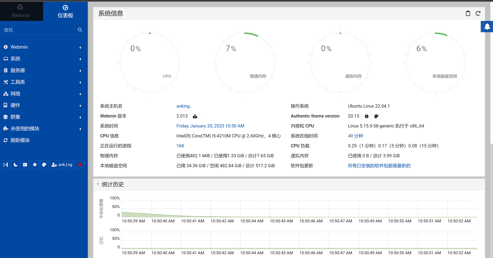
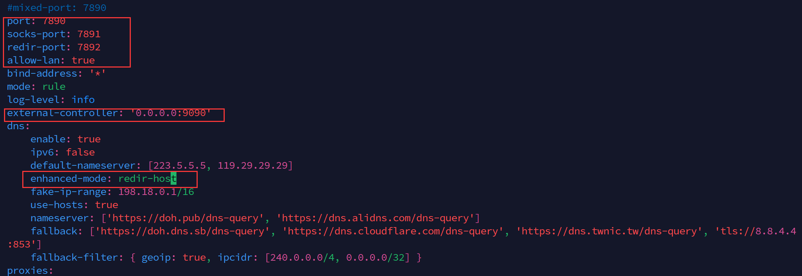
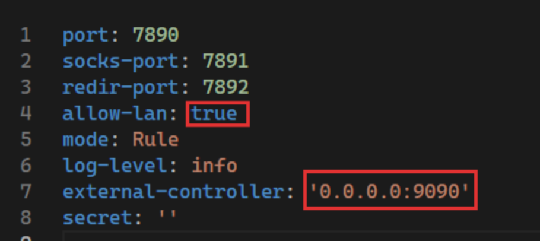
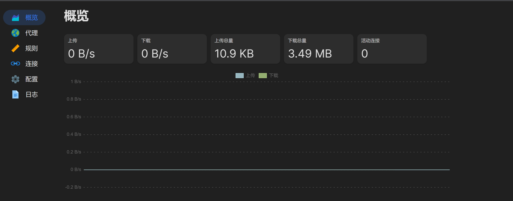

Nas实践
系统选择：ubuntu server 22.04.1
软件： Nextcloud Aria2 Transmission jellyfin RClone CasaOS Caddy
一、软件安装
1、webmin
可视化 linux 管理界面
安装：
- 首先升级软件包列表，并且安装依赖软件：
1 | sudo apt update |
- 导入 Webmin 的 GPG key 并且将 Webmin 软件源添加到系统软件源
1 | wget -q http://www.webmin.com/jcameron-key.asc -O- | sudo apt-key add - |
- 安装最新版的 Webmin
1 | sudo apt install webmin |
- 调整防火墙：默认情况下，Webmin 再所有网络接口上监听端口 1000. 需要再防火墙上打开这个端口，以便通过互联网访问 Webmin 。
1 | sudo ufw allow 10000/tcp |
- 访问 Webmin 网络界面：在浏览器中输入如下
1 | https://ip_or_hostname:10000 |
2、安装 clash for linux
- 从 clash官网 下载文件
clash-linux-amd64 - 将 windows 中的 clash 的配置文件
.yaml和Country.mmdb复制到 ubuntu 的~/.config/clash/目录下。 - 修改
.yaml文件如下： - 赋予
clash-linux-amd64可执行权限：chmod +x clash-linux-amd64 - 运行
clash-linux-amd64:./clash-linux-amd64 - 配置全局代理：
bash export https_proxy= http://127.0.0.1:7890 http_proxy= http://127.0.0.1:7890 all_proxy=socks5://127.0.0.1: 7890
接下来配置 clash 自启动：在/etc/systed/system下新建clash.service文件，然后写入：
1 | [Unit] |
然后配置定时更新订阅：先在 ~/.config/clash 目录下新建一个 subscribe 文件，并写入订阅链接。然后在 ~/clash 下新建 subscribe.sh 文件并写入如下：
1 | #!/bin/bash |
接着设置定时任务：
1 | sudo crontab -e |
然后重启定时服务 ：sudo systemctl restart cron.service
网页版 clash
使用 docker 安装：
1 | # 拉取yacd镜像 |
这里需要在 .yaml 中配置一点东西：
接着就可以在浏览器中输入：ip:1234 访问界面：
3、Nextcloud
安装教程：可能是最完美的Nextcloud搭建指南 - 禾奈
4、宝塔 linux
二、系统设置
1、frp 开机自启动
在 /etc/systemd/system 中新建文件：frpc.service 并写入如下内容：
1 | [Unit] |
然后：
1 | sudo systemctl enable frpc |
All articles in this blog are licensed under CC BY-NC-SA 4.0 unless stating additionally.